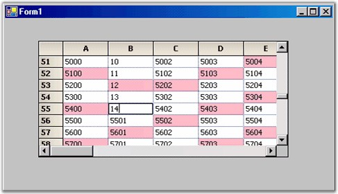

While working on your Virtual Grid, you will see that the changes do not stay around after you leave the current cell, i.e., if you over type a cell entry, when you move off the cell, the old value is restored. The reason is that currently, there is no way for the changed value to be moved back to the external data source. So, as you move off the cell, when the grid redraws the old cell, it will query the external data source (through GridQueryCellInfo), get the original value and display it. The value which you have typed will be lost.
In order to edit and save values in the Virtual Grid, you must be able to get the changed value back to the external data source. This is accomplished through the GridControl.SaveCellInfo event. You must add a handler for this event and in this handler, you must save the changed value back to the external data source.
|
[C#]
private void Form1_Load(object sender, System.EventArgs e) { // Create a new external data source with 100 rows and 20 columns. this._extData = new ExternalData(100, 20);
// Hook up the events needed for the virtual grid. gridControl1.ResetVolatileData(); gridControl1.QueryCellInfo += new GridQueryCellInfoEventHandler( GridQueryCellInfo); gridControl1.QueryRowCount += new GridRowColCountEventHandler( GridQueryRowCount); gridControl1.QueryColCount += new GridRowColCountEventHandler( GridQueryColCount);
// Handle saving data back to the data source. gridControl1.SaveCellInfo += new GridSaveCellInfoEventHandler( GridSaveCellInfo); }
void GridSaveCellInfo(object sender, GridSaveCellInfoEventArgs e) { try { // Move the changes back to the external data object. if( e.ColIndex > 0 && e.RowIndex > 0) { this._extData[e.RowIndex - 1, e.ColIndex - 1] = int.Parse(e.Style.CellValue.ToString()); } } catch{} e.Handled = true; } |
|
[VB.NET]
Private Sub Form1_Load(ByVal sender As Object, ByVal e As EventArgs)
' Create a new external data source with 100 rows and 20 columns. Me._extData = New ExternalData(100, 20)
' Prepare the grid for virtual data. gridControl1.ResetVolatileData()
' Hook up the events needed for the virtual grid. ' While only the QueryCellInfo is absolutely required, it would be unusual not to handle at least one of the count events. AddHandler gridControl1.QueryCellInfo, New _GridQueryCellInfoEventHandler(AddressOf GridQueryCellInfo) AddHandler gridControl1.QueryRowCount, New _GridRowColCountEventHandler(AddressOf GridQueryRowCount) AddHandler gridControl1.QueryColCount, New _GridRowColCountEventHandler(AddressOf GridQueryColCount)
' Handle saving data back to the data source. AddHandler gridControl1.SaveCellInfo, New _GridSaveCellInfoEventHandler(AddressOf GridSaveCellInfo) End Sub
Private Sub GridSaveCellInfo(ByVal sender As Object, ByVal e _As GridSaveCellInfoEventArgs) Try
' Move the changes back to the external data object. If ((e.ColIndex > 0) AndAlso (e.RowIndex > 0)) Then Me._extData((e.RowIndex - 1), (e.ColIndex - 1)) = _System.Int32.Parse(e.Style.CellValue.ToString) End If Catch ex As System.Exception End Try e.Handled = True End Sub |

Figure 65: Editable Virtual Grid